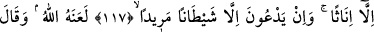

İNATÇI ŞEYTAN
116- Allah, kendisine ortak koşulmasını asla bağışlamaz; ondan başka günahları
dilediği kimse için bağışlar. Kim Allah’a ortak koşarsa büsbütün sapıtmıştır.
117- Onlar (müşrikler) O’nu bırakıp yalnızca bir takım dişilerden (dişi isimli
tanrılardan) istiyorlar, ancak inatçı şeytandan dilekte bulunuyorlar.
118- Allah onu (şeytanı) lânetlemiş; o da: «Yemin ederim ki, kullarından belli bir
pay edineceğim» demiştir.
119- «Onları mutlaka saptıracağım, muhakkak onları boş kuruntulara boğacağım,
kesinlikle onlara emredeceğim de hayvanların kulaklarını yaracaklar (putlar için
nişanlayacaklar),
şüphesiz
onlara
emredeceğim
de
Allah’ın
yarattığını
değiştirecekler» (dedi). Kim Allah’ı bırakır da şeytanı dost edinirse elbette apaçık
bir ziyana düşmüştür.
120- (Şeytan) onlara söz verir ve onları ümitlendirir; halbuki şeytanın onlara söz
vermesi aldatmacadan başka bir şey değildir.
121- İşte onların yeri cehennemdir; ondan kaçıp kurtulacak bir yer de
bulamayacaklardır.
“Allah, kendisine ortak koşulmasını aslâ bağışlamaz, ondan başka günahları
dilediği kimse için bağışlar.”
Rivâyete göre yaşlı bir kimse, Rasûlullah (s.a.v.)’e gelip “Ben günahlara düşkün yaşlı
bir adamım. Ancak şu kadar var ki ben, Cenâb-ı Hakk’ı bildiğim ve O’na îman ettiğim
günden beri şirk koşmadım. O’ndan başka dost edinmedim ve Hak Teâlâ’ya karşı bir
cür’et olarak günahları da yapmış değilim. Ben kaçmakla Cenab-ı Hakk’ı aciz
bırakabileceğimi de bir an olsun düşünmedim. Ben pişman oldum ve tevbe ettim. Sen
benim bu durumum için ne dersin?” demesi üzerine bu âyet nâzil olmuştur.